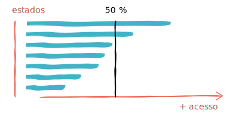

A minoria da população acessa a internet

Visualizando a "Utilização da internet nos estados do Brasil" em valores relativos, note que em apenas 5 estados a utilização passa dos 50%.
Apesar de existir uma sensação de que "a maioria das pessoas" acessa a internet hoje em dia, os dados mostram que na verdade são poucos os lugares onde pode se dizer isso de verdade.
Em números relativos, São Paulo não é o estado onde mais se acessa a internet.
Distrito Federal é onde a maioria das pessoas acessa a internet: 71.1% da população do estado, contra 59.5% em São Paulo.
Já em números absolutos...
O estado de São Paulo possui quase três vezes mais internautas do que o segundo colocado, Rio de Janeiro. São quase 22 milhões em SP contra 7.8 milhões no Rio.
Em números relativos, não existe um padrão que se destaque
A parte de baixo do mapa (Goiás pra baixo) até pode ser um pouco mais escuro que a de cima, mas não é nada destoante.

Talvez, o único ponto que destoe no mapa é a baixa porcentagem de acesso nos estados do Maranhão e Piauí - o que pode indicar um bom ponto de partida para políticas de inclusão digital.
Concentração de usuários em uma faixa

Em números absolutos, surge uma faixa escura no mapa que vai do Ceará ao Rio Grande do Sul. Nenhum estado da região norte entra nesta faixa.
O acesso à internet nas regiões metropolitanas é um pouco maior

O padrão apresentado pelos gráficos em valores relativos indica uma pequena inclinação, que representa um aumento não muito grande no acesso nas regiões metropolitanas. Isso é algo bom, pois indica que pelo menos em questão de inclusão digital, não há muito contraste entre o estado e sua região metropolitana.
Maior área = maior inclinação?
Os dois estados contemplados com maior inclinação no gráfico relativo são os estados do Pará (Belém) e Bahia (Salvador). É válido observar que junto a Minas Gerais, eles são os estados com a maior dimensão, e talvez a dificuldade para oferecer uma infraestrutura adequada ao acesso à internet por toda sua extensão nestes estados seja uma tarefa mais difícil do que em estados de dimensões menores.